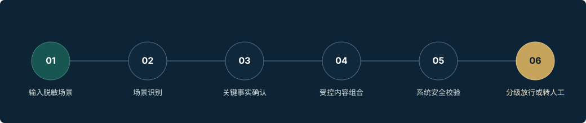

可审核
内容上线前经过人工审核，公开演示内容与内部受控内容相互隔离。
员工输入脱敏场景，系统识别问题、确认事实、组合受控话术并执行安全校验。
公开站不会上传、保存或发送输入内容。请勿输入任何真实客户、员工或业务信息。
七个受控问题帮助员工在行动前确认边界。待确认是待核实状态，不等同于已确认风险。
该结果仅用于演示业务前自查逻辑，不构成业务审批、合规批准或正式处理结论。
把官方公开文件和“小航风险解读”清晰分层，让监管案例落到员工可执行的动作。
七天路线预览，以核心边界、案例、微测和自查建立入职早期的合规行动框架。
本模块正在建设，未来用于新员工入职辅导和日常学习，不替代公司正式培训、考试、任职资格管理及培训档案。
演示治理框架只展示公开概念，不展示真实内部记录、技术指纹或受控正文。

内容上线前经过人工审核，公开演示内容与内部受控内容相互隔离。
内容、公开来源、版本和决定具备回溯路径。
不同场景按受控模块和场景包进行组合，而非自由生成结论。
系统按事实、禁语、来源和放行规则执行自动检查。
形成沟通工作台、案例学习和办事前自查三个核心入口，当前适合内部展示、内容审核和试点准备。